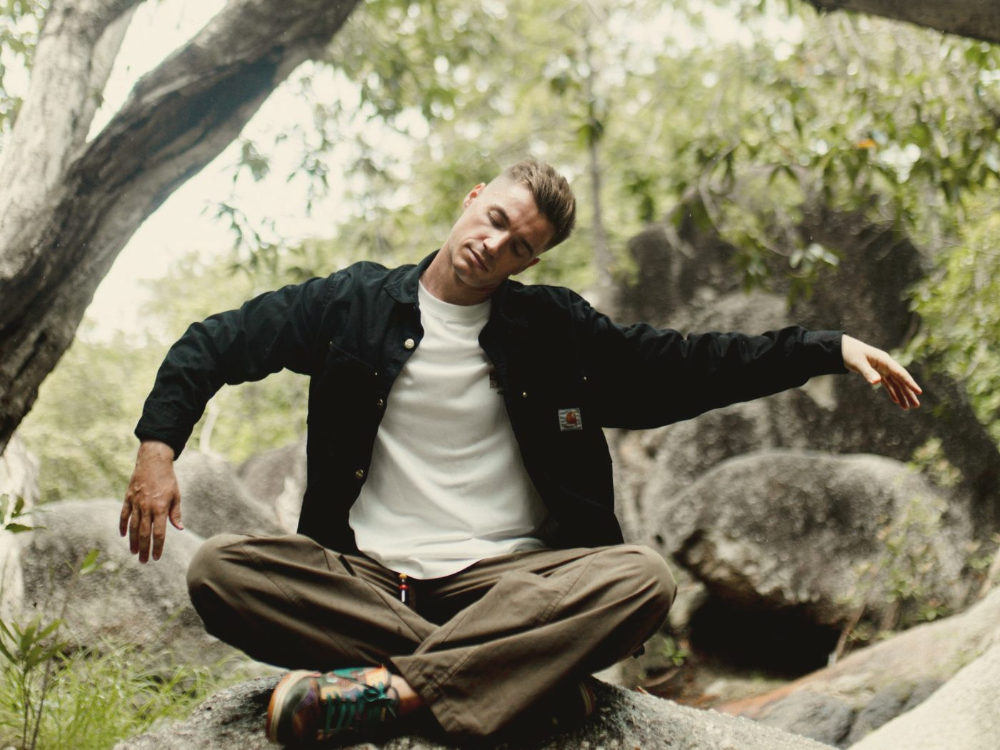
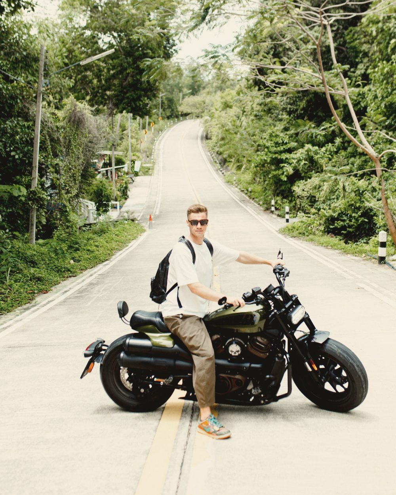
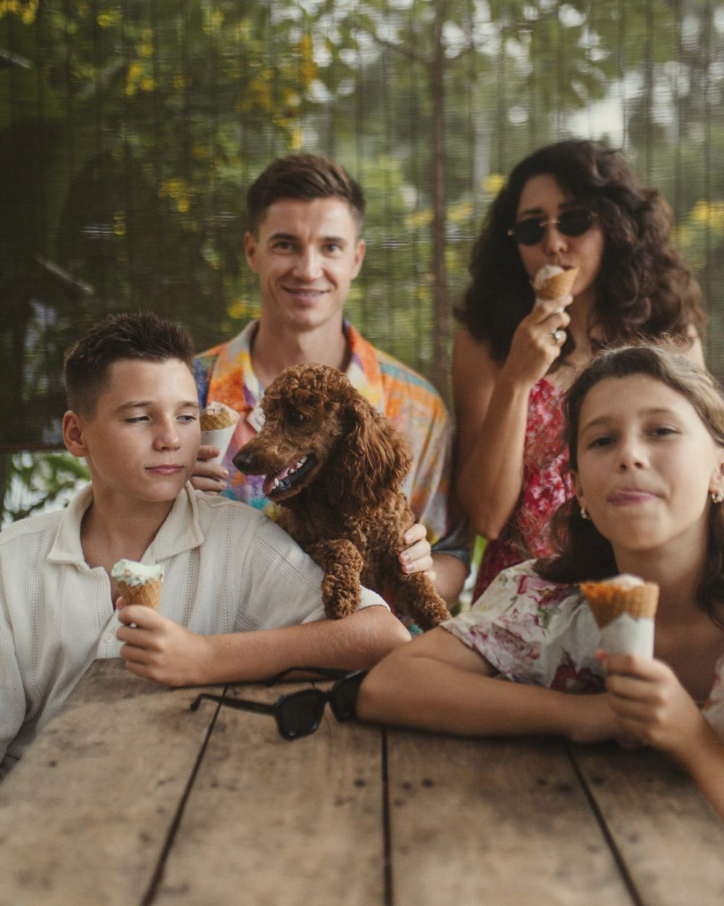
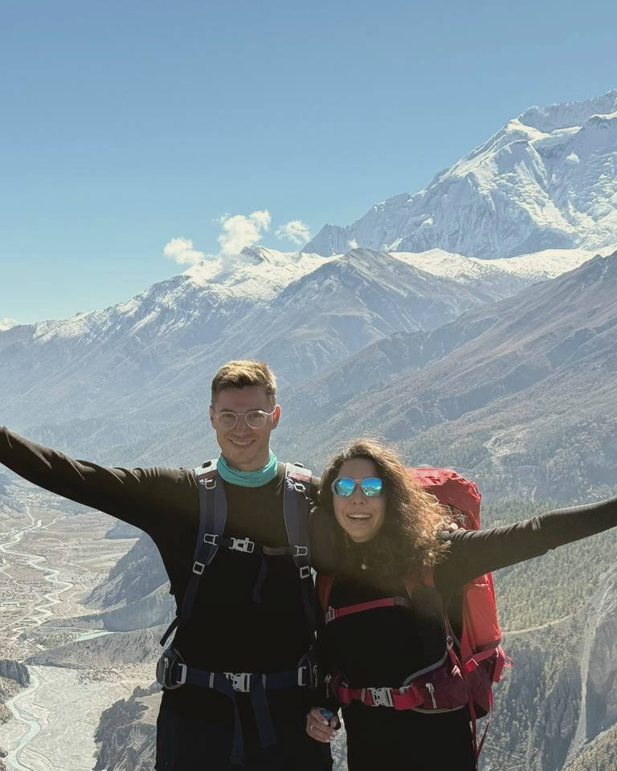

Entrepreneurship is my art. I build to express what I see.
Repeat founder, investor, father and explorer.

Alum
- Cambridge Judge Business School
- Entrepreneur First
- Outlier Ventures
- Google for Startups
Angel & Limited Partner
- Dnipro VC
- Contango VC
- 100+ YC-backed teams
Why I build
Why I build
Before enlightenment, chop wood, carry water.
After enlightenment, chop wood, carry water.
I’ve built things my whole adult life. What changed is where it comes from. The work doesn’t change. The person doing it does.
I’ve always had more energy than I knew what to do with. It took a long road to learn where to direct it, and what matters.
Chop wood · the work
How I got here
From a town in western Ukraine to San Francisco.
-
I
Ukraine
Growing up with three sisters, inspired by Cousteau, dreaming of seeing the world.
-
II
Student years
Open World alumnus. Led an NGO, built and monetized a 200k+ member online community.
-
III
2015–2022
Deep in tech: a software agency with a friend, Bitcoin, a first AI/ML startup. Then the war.
-
IV
UK, 2022–2025
Cambridge, the first in my family to study abroad. Entrepreneur First.
-
V
Assisterr, 2023–2026
$2.8M raised, 5M+ users, 42k agents. T1 listings: Kraken, Bybit, Binance Alpha.
-
VI
Asia, 2025–2026
Family-maxxing, practice, grounding.
-
VII
San Francisco, now
Back in the market, with an open mind.
- Next Read the whole story Seven chapters, and what each one handed to the next.
Now
San Francisco
In stealth
Building financial infrastructure for the agent economy.
Agents are a new generation.
Like Gen Z, they arrive with their own needs and patterns of behavior. We have to build their tools and make sure they stay consistent and safe for every other generation. And they need economic freedom to earn, spend and be trusted with money, as long as it doesn’t harm people. That’s the edge I’m working on.
Carry water · the practice
Energy needs a direction.
Kung fu, Muay Thai, meditation and the outdoors keep mine pointed the right way.


